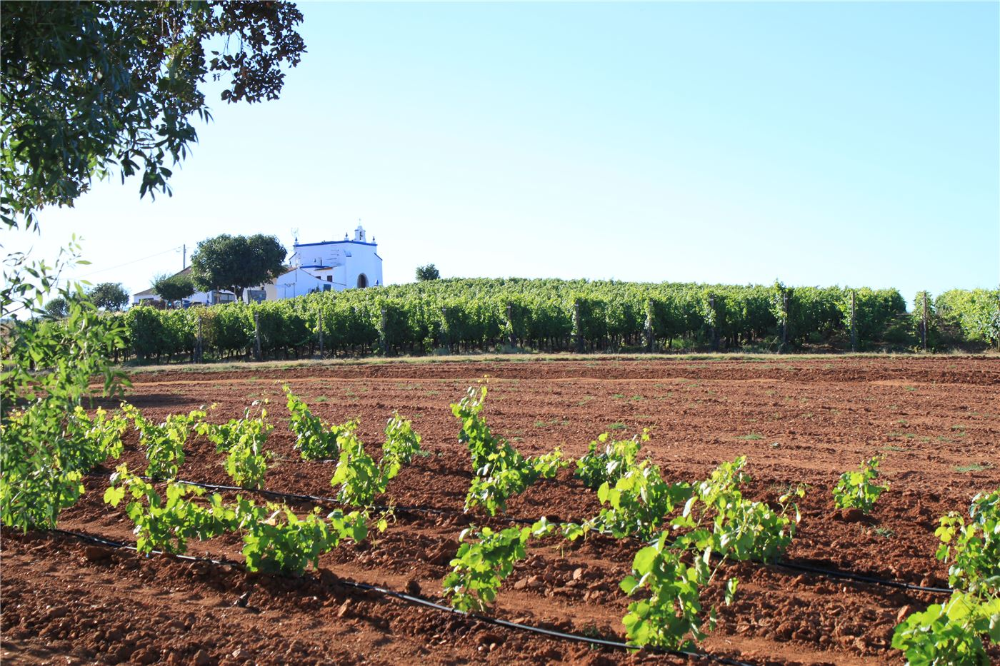
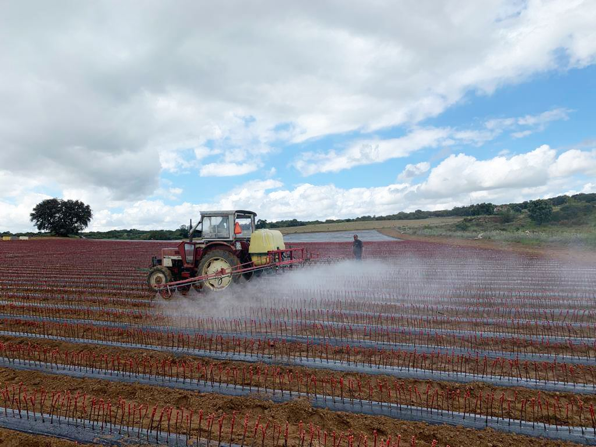
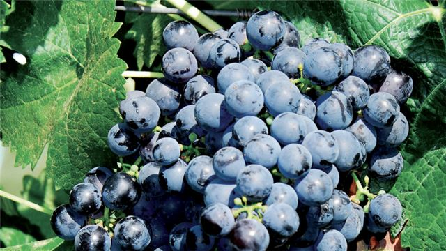

Viveiros Plansel · Montemor-o-Novo · Alentejo
Viti per un vigneto di successo.
Barbatelle innestate dei migliori vitigni portoghesi. Certificate e coltivate nel nostro vivaio in Alentejo.
Viveiros Plansel fa parte del Plansel Group: vini, eventi e conoscenza

- 1975Primi vigneti a Montemor-o-Novo
- ~50 %delle viti certificate del Portogallo provengono da cloni Plansel*
- 50+anni di selezione clonale di varietà portoghesi
- 12vitigni nel programma, oltre a portinnesti e uve da tavola
- 100 %materiale di impianto certificato
* Dato aziendale Plansel, citato da Vinetur, 9 nov 2026
 Viveiros01
Viveiros01
Cosa offriamo
Dalla vite all'olivo.
Scopri Viveiros Plansel e tutto ciò che offriamo a viticoltori e olivicoltori.
 01VivaioBarbatelle innestate, coltivate dai migliori vitigni portoghesi.
01VivaioBarbatelle innestate, coltivate dai migliori vitigni portoghesi. 02Vitigni e portinnestiLa storia dei vitigni e dei portinnesti che propaghiamo.
02Vitigni e portinnestiLa storia dei vitigni e dei portinnesti che propaghiamo. 03OliviLe nostre varietà di olivo e il loro sviluppo tecnico e scientifico.
03OliviLe nostre varietà di olivo e il loro sviluppo tecnico e scientifico.
04Servizi e prodottiServizi e prodotti per vigneto e oliveto, su richiesta.
 Come tutto è iniziato02
Come tutto è iniziato02
Come tutto è iniziato
Un vivaio che ha cambiato il Portogallo.
Dopo l'acquisto della Quinta de S. Jorge a Montemor-o-Novo, Jorge Böhm, tedesco di nascita con un profondo amore per il Portogallo, fondò l'azienda Plansel.
È cresciuta con il vivaio, soprattutto con le barbatelle innestate, fino ad allora praticamente sconosciute in Portogallo. In seguito si è aggiunta la propagazione di olivi da talee semilegnose.

 Produzione03
Produzione03
Il viaggio di una vite
Dal tralcio alla barbatella in otto passaggi.
Dalla potatura alla spedizione, tutto il materiale resta etichettato per vitigno, clone e categoria di certificazione.
- 01Taglio dei portinnesti
I portinnesti vengono tagliati in campo, selezionati per calibro, sgemmati a macchina, legati in fasci da 200 tralci e disinfettati.
- 02Raccolta delle marze
Il legno delle varietà da innestare viene tagliato in campo, legato, etichettato e separato per clone e categoria di certificazione.
- 03Conservazione a freddo
In una cella frigorifera con umidità e temperatura controllate.
- 04Innesto
Personale esperto innesta al banco; la macchina esegue il taglio a omega.
- 05Stratificazione
In cassette riempite di torba, portinnesto e marza si saldano in una camera calda e umida.
- 06Campo del vivaio
Le viti crescono in campo fino all'autunno o all'inverno. Plansel e i servizi ufficiali controllano varietà e stato sanitario.
- 07Selezione e paraffinatura
Ogni vite viene controllata secondo le norme di legge, le radici vengono rifilate, poi viene paraffinata, contata e conservata in un locale climatizzato.
- 08Spedizione e messa a dimora
In scatole di cartone rivestite di plastica contro la disidratazione. Prima dell'impianto le radici vengono rifilate; si pianta a mano o a macchina.
Certificazione
Tutto il materiale d'impianto è certificato.
Vendiamo nella categoria “certificato”, riconoscibile dall'etichetta blu. Il materiale dei nostri campi di piante madri va al nostro vivaio, ai viticoltori e ad altri vivai.
 Vitigni04
Vitigni04
Viticultura
I vitigni che propaghiamo.
Vitigni portoghesi dalla selezione clonale Plansel.
- Touriga NacionalVitigno rosso
 Touriga FrancaVitigno rosso
Touriga FrancaVitigno rosso
TrincadeiraVitigno rosso AragonezVitigno rosso
AragonezVitigno rosso Tinta BarrocaVitigno rosso
Tinta BarrocaVitigno rosso CastelãoVitigno rosso
CastelãoVitigno rosso ArintoVitigno bianco
ArintoVitigno bianco Antão VazVitigno bianco
Antão VazVitigno bianco LoureiroVitigno bianco
LoureiroVitigno bianco GouveioVitigno bianco
GouveioVitigno bianco ViosinhoVitigno bianco
ViosinhoVitigno bianco- Foto in arrivoAlvarinhoVitigno bianco
Uve da tavola, portinnesti, cloni e quantità sono disponibili su richiesta.
 Olivicultura05
Olivicultura05
Olivicultura
Anche gli olivi provengono dal nostro vivaio.
Propaghiamo varietà di olivo da talee semilegnose e ne seguiamo lo sviluppo tecnico e scientifico.
 Contatti06
Contatti06
Ordina viti
Domande? Scrivici.
Indicaci vitigni, cloni, portinnesti e quantità. Rispondiamo con disponibilità e preventivo.
- Indirizzo
- Viveiros Plansel, Quinta de São Jorge
Estrada Municipal 537, Porto das Lãs
7050-203 Montemor-o-Novo, Portugal - viveiros@plansel.com
- Telefono
- +351 266 899 260
Chiamata verso una rete fissa portoghese - Seguici
- Instagram · Facebook